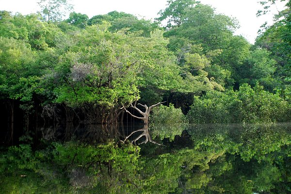
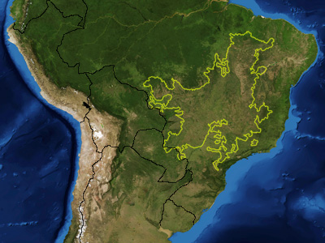
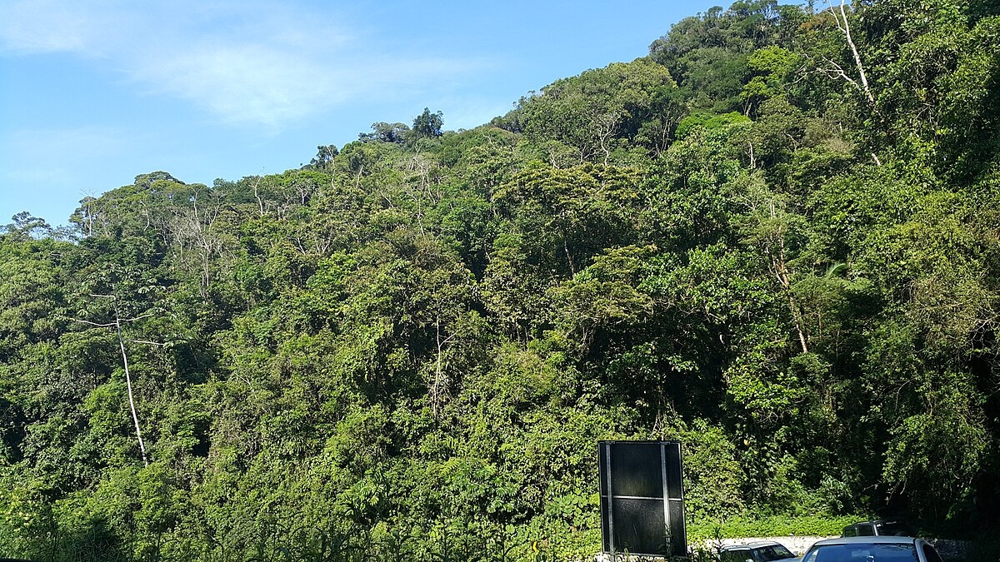
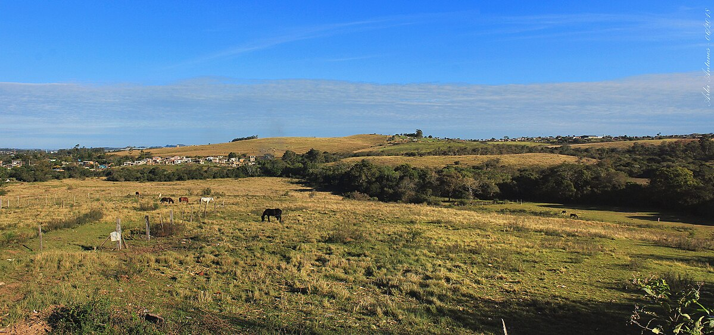
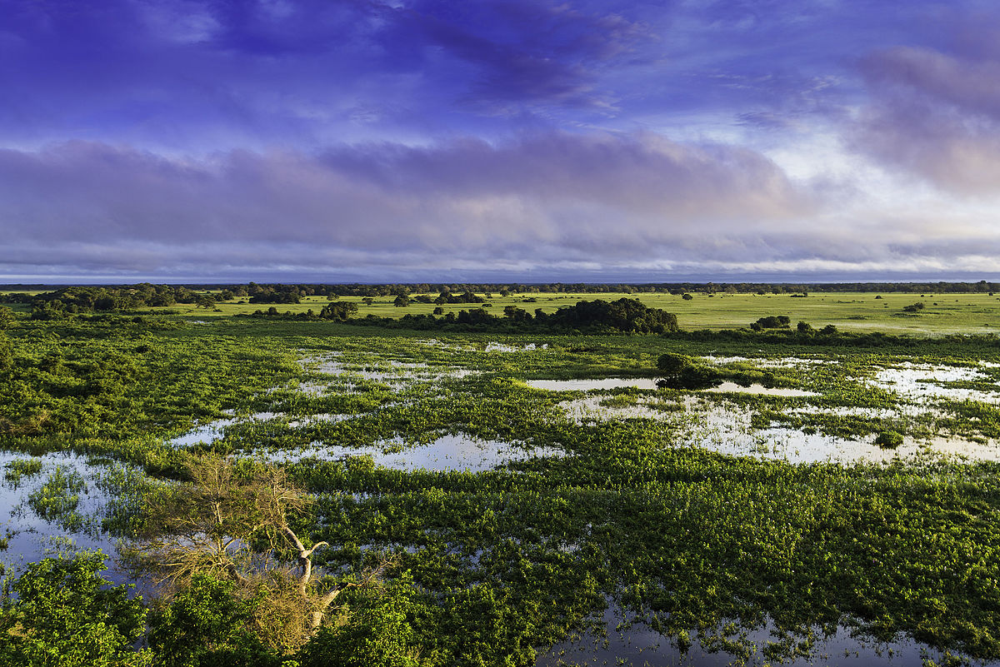

Os biomas são grandes áreas naturais caracterizadas por clima, solo, vegetação e fauna específicos. No Brasil, existem seis biomas principais, cada um com características ecológicas únicas e grande importância ambiental.
É o maior bioma brasileiro, ocupando cerca de 49% do território nacional. Possui clima equatorial, quente e úmido, com chuvas abundantes durante o ano todo. A vegetação é composta por floresta densa e árvores de grande porte. É considerado o bioma mais biodiverso do planeta.

Segundo maior bioma do Brasil, o Cerrado é uma savana tropical com vegetação composta por árvores retorcidas, arbustos e gramíneas. O clima é tropical sazonal, com estação seca bem definida. É um dos biomas mais ameaçados pela expansão agrícola.

Exclusivo do Brasil, a Caatinga ocupa o semiárido nordestino. O clima é quente e seco, com chuvas escassas e irregulares. A vegetação é adaptada à escassez de água, com plantas xerófitas como cactos e arbustos espinhosos. Apesar de parecer pobre, possui rica biodiversidade adaptada ao ambiente hostil.

Originalmente ocupava grande parte do litoral brasileiro. É uma floresta tropical úmida, com alta biodiversidade e grande número de espécies endêmicas. Foi intensamente devastada desde o período colonial, restando hoje menos de 15% de sua cobertura original.

Localizado no sul do Brasil, especialmente no Rio Grande do Sul, o Pampa é formado por campos naturais com vegetação rasteira. O clima é subtropical, com estações bem definidas. É um bioma importante para a pecuária e agricultura, mas sofre com a degradação do solo.

É a maior planície alagável do mundo, localizada principalmente em Mato Grosso e Mato Grosso do Sul. Possui clima tropical e é caracterizado por inundações periódicas que moldam sua vegetação e fauna. É um dos biomas mais preservados do Brasil, com rica biodiversidade aquática e terrestre.

Os biomas brasileiros são fundamentais para o equilíbrio ecológico, conservação da biodiversidade, regulação do clima e manutenção dos recursos hídricos. A preservação desses ambientes é essencial para garantir a sustentabilidade ambiental e a qualidade de vida das futuras gerações.